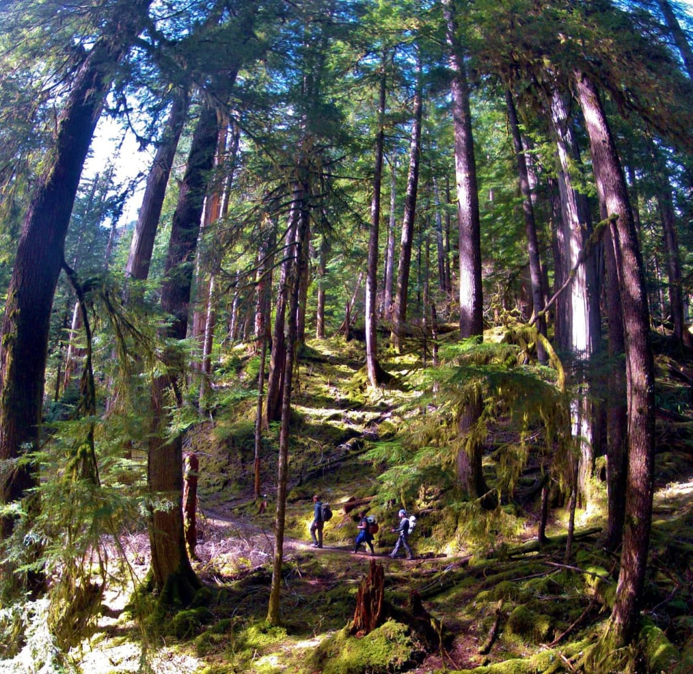

Introduction

Olympic National Park is on Washington's Olympic Peninsula in the Pacific Northwest. The park sprawls across several different ecosystems, from the dramatic peaks of the Olympic Mountains to old-growth forests. The summit of glacier-clad Mt. Olympus is popular with climbers, and hiking and backpacking trails cut through the park's rainforests and along its Pacific coastline.
At 1,442 square miles in size, Olympic National Park is larger than Rhode Island by 200 square miles, over half the size of Delaware, nearly twice as large as Great Smoky Mountain National Park, and 300 square miles larger than Yosemite. One road surrounds the park and to drive around the entire park takes nearly six full hours with no stops. Olympic National Park is also home to 49 peaks over 6,500 feet, many of which are rarely climbed due to difficult terrain and isolation. Over 600 miles of trails are waiting to be explored and enjoyed, the majority of which are designated wilderness by the National Park Service.
Landscapes
Beach
The beaches of Olympic National Park are some of the best in the world, but not for those who like to lay on pristine sections of coast with warm waters. Olympic's beaches are rocky, craggy, full of sea life, and provide amazing hiking opportunities. Complete with some of the most picturesque sea-stacks in the world, these beaches make for great storm watching on rainy days and amazing hiking on sunny days. Depending on the season, whales, both gray and Orca, are visible from every beach. From LaPush to Shi Shi and the popular Ruby Beach, each and every visitor that sets their sights on the Washington Coast will fall in love with it. Whether you are looking for a day hike, a backpacking trip, or an amazing place to catch the sunrise, few places compare to the Pacific Coast of Olympic National Park.
Rainforests
Technically, the western edge of Olympic National Park is one rainforest, but locals have broken these rainy, temperate forests into three distinct rainforests; the Hoh, Queets, and Quinault. The Hoh Rainforest is the most famous, with moss-covered trees, short and flat hiking trails, and over 120 inches of rain falling annually. Bobcat, bear and elk can be seen along creeks, gorging themselves on salmon who've returned to their spawning grounds upstream. For the more adventurous, the Hoh Rainforest is where you can summit the tallest peak in the park, Mount Olympus. The Queets rainforest is the most remote and less visited rainforest region in Olympic National Park. With up to 140 inches of rain, the Queets Rainforest is where every drop of rain falls before the clouds off the Pacific Ocean rise of the mighty Mount Olympus. If you want to be alone in a rainforest, this is where you must go. The Quinault Rainforest is one of the classic destinations for tourists looking to get away from the more popular Hoh Rainforest region. With 120 inches of a rain a year, this wet, damp, moss-covered forest is home to black bears, salmon, eagles, waterfalls and incredible backpacking trips, exploring the Quinault Rainforest should be at the top of everyone's list.
Water
Olympic National Park consists of water, so the rivers, lakes and waterfalls of the region serve as the life-force. High alpine lakes, like Lake of the Angels and the Seven Lakes Basin region are sought after hiking and backpacking destinations. If isolated lakes aren't what you enjoy, Lake Crescent and Lake Quinault are fantastic lakes in the park. Lake Crescent, near to great hiking, kayaking and camping is the second deepest lake in Washington State, estimated to be over 1,000 feet deep in places. Lake Quinault isn't nearly that deep, but it is home to great views, a classic old lodge, and it's close to the mountains, the rainforest and the ocean.